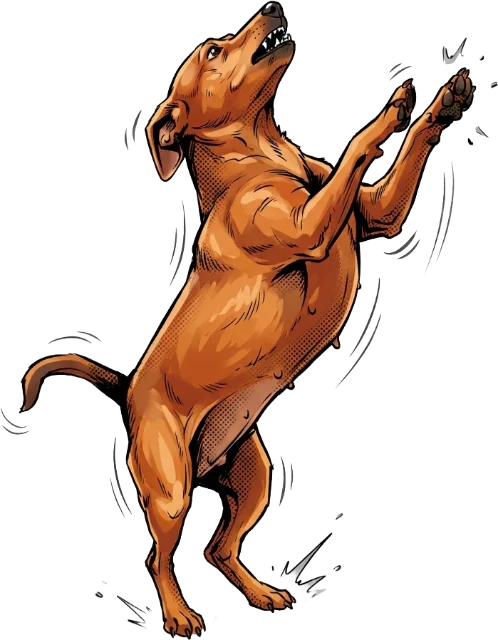
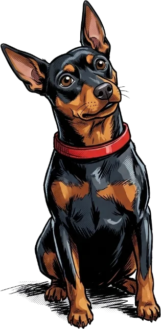
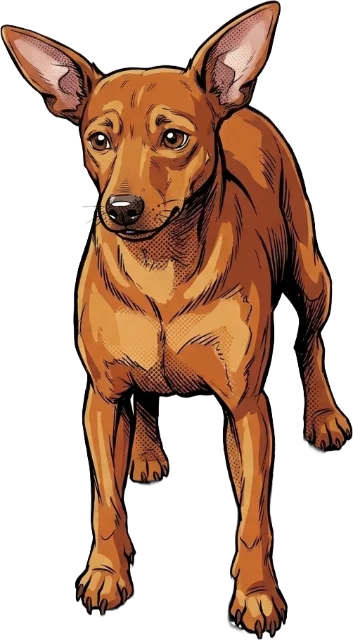

Що любити ♥
- Компактний — підходить для квартири
- Коротка шерсть: мінімум догляду, майже не пахне
- Розумний, швидко вчиться
- Відданий і ласкавий зі своїми
- Міцне здоров'я і довге життя (за правильного розведення)
Чесно про породу: кому підійде, а кому краще обрати іншу. І тест на 1 хвилину.
Цвергпінчер — стара німецька порода (стандарт FCI № 185). Його часто називають мініатюрним доберманом, але насправді він старший за добермана і зовсім не його зменшена копія.
Це сміливий, швидкий і дуже кмітливий собака. Він хоче бути в центрі подій, обожнює свою родину і пильно стежить за всім, що відбувається вдома.


Ваш результатВаш ритм життя чудово підходить енергійному і розумному цвергпінчеру. Наступний приплід Happy Stacyland — у 2027 році: займіть місце в листі очікування.

Ваш результатЦвергпінчер може стати вашим другом, якщо ви приділите трохи більше часу прогулянкам і вихованню. Почніть з чек-листа, а з питаннями пишіть мені — підкажу.

Ваш результатЦвергпінчеру потрібно багато руху, уваги й виховання. Чесно: якщо зараз на це мало часу, краще придивитися до спокійнішої породи. Якщо хочете обговорити — напишіть, я завжди відповім.
Як підготувати дім і пережити перші ночі без стресу.
стаття буде пізніше
Повний список: від лежанки до першого комбінезона.
стаття буде пізніше
Історія породи і різниця в характері.
стаття буде пізніше